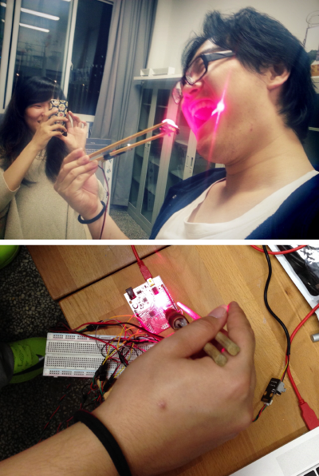

Cooking With Strangers 厨艺分享站
Basic Info
Type: Interactive Installation
Tool: Processing / Arduino /Spacebrew
Team member: 3
Work in charge: Software Programming / Hardware Hacking
Requirement & Purpose
This cooking station collected the cooking data (position of the chopsticks, the temperature and the ingredients in four dishes) and sent them to the students in Parsons, New York via Spacebrew to help them cook their own food.
The tech points involved were about linking multiple sensors, both digital and analog, connecting Spacebrew and braghtness tracking in computer vision.
Cooking pot setting
Interactive model
Capacity sensor
Temperature sensor

Hacking laser pen to use Arduino power supply
Placing the web cam above the oven
Pulling signal into laptop and using video image for brightness tracking
Overall setting and testing

Testing data sending using SPACEBREW